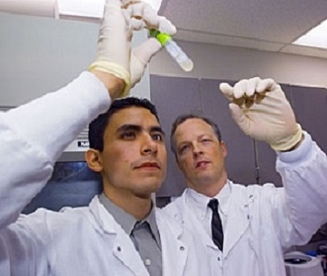
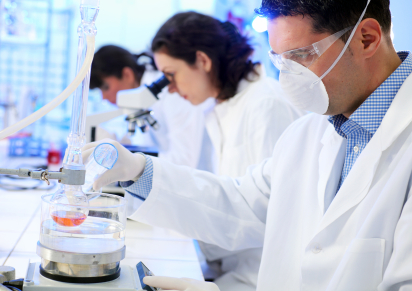

THIS WEBSITE IS MANAGED BY NEW WORLD HEALTH. (N.W.H)
The New World Health organisation is made up of volunteers and receives no funding from any external source.
All information on the site, developed originally from our collective genius, and is evidence based from reviewed movies/books by a panel of undead experts to ensure it is scientifically accurate. The site content is monitored and regularly updated by a team of volunteers who are trained in science and web development.
The site includes a facility to our ( Our Products, Our Services, and Our contact info ).
These queries are responded to within one working living day and the content of the website is updated if appropriate.
All those involved in the content of this site are employed by the NWH and do not receive funding from any external source.
New World Health Office Staff:
Niamh Ni Bhriain, Consultant in Public Health Medicine
Adnan Hanbouz, Senior Medical Officer
Rory Sheridan, General Manager, Immunisation ICT project
Noel Healy, Chief Pharmacist